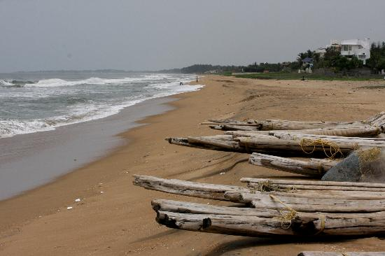

Marina Beach of Chennai is a popular destination. Marina Beach is one of the longest urban beaches in the world. Stretched along the Coromandel Coast of the Bay of Bengal for about 12 km, Marina Beach is bordered by St. George Fort in the North and Besant Nagar in the South.Marina Beach is a popular picnic spot since the 1880s. Famous for its long stretch of silver sands and blue sea, Marina Beach provides a clear view of sunrise and sunset. The side drive of the beach is fringed by palms and casuarinas which provide shade. The lighthouse, situated at the southern end of the beach, provides panoramic views of the city of Chennai.Marina Beach has become a centre for activities like wind surfing, fishing, sun bathing, kit flying and beach volley ball. But the strong current of water makes Marina Beach unsuitable for swimming.The Marina Beach drive is home to popular landmarks of the city like the Senate House, Ice House, Anna Square, MGR Memorial, etc. Marina Beach also has an Aquarium, artificial water fountain, a swimming pool and a park. The park at Marina Beach is very popular as it has sculptures of many leaders and celebrities like Mahatma Gandhi, B.G. Tilak, Bharathidasan, Tiruvalluvar, Kamaraj, Swami Sivananda, Sir Thomas Munro, the Statue of Labour, Thanthai Periyar, etc.
Besant Nagar Beach also known as Elliot's Beach or 'Bessie' is a picnic spot located in Chennai. Besant Nagar a residential area is named after the famous lady theosophist Annie Besant and Besant Nagar Beach is the end point of the Marina beach shore.A favourite spot for families and tourists alike, this beach is used by elders for morning and evening strolls and by children for various playtime activities as it is not as crowded as Marina beach. As there is no water-sports activities offered in this beach, it is an ideal spot for spending quality time with family and friends. The other attraction located close by includes The Theosophical Society of India, Church of Velankanni, Ashtalakshmi Temple and the dance school 'Kalakshetra'.The main attraction of the beach is 'Karl Schmidt Memorial', built in memory of a Dutch sailor who lost his life while saving the life of a drowning swimmer in the beach. This is a preferred hangout by youngsters. There are many eat-outs close to the beach serving varieties of food from different parts of the country and the world.As the Besant Nagar bus terminal is close by, the beach is easily reachable by bus.

Elliott Beach, located towards the South of Marina Beach is a calm place and is considered one among the cleanest beaches in Tamil Nadu. Known also as Besseia among the natives, Elliott Beach is ideal for relaxing and lazing around.Elliott Beach can be easily reached by walking down from the southern end of Marina Beach. The spot where River Adyar meets the Bay of Bengal is towards the northern side of Elliott Beach, which is mostly visited by bird watchers. Pond Herons and flamingos can be spotted here. In the southern end of Elliott Beach are located the Ashta Lakshmi Temple and Velanganni Church, which are famous religious destinations in Tamil Nadu. There is also a Ganesh Temple at the southern end of this beach. The Schmidt Memorial is yet another attraction of Elliott Beach which was built in memory of a Dutch sailor, Karl Schmidt.

 VGP Golden Beach is a beach attached to the VGP Universal Kingdom situated on East Coast Road.This beach lies adjacent to the amusement park and is one of the safest and cleanest beaches making it one of the most preferred beaches in Chennai. VGP Golden Beach is one of the sought after locations for film shootings as well. VGP Golden Beach is also the perfect place for morning walks, swims, and the best place where you can spend quality time with your loved ones.One can also visit the theme park at VGP Golden Beach. It has several fun and adventure rides for both children and adults, making this a preferred destination for the whole family. Some of the main attractions are the VGP 2000 millennium tower, paneer fort and the statue man, other than the water-based rides and adventure rides.Open all on days from 11 am to 8 pm, the entry ticket for adults and children are INR 150 and INR 100, respectivelyThe best time to visit VGP Golden Beach is during the months of October and February when the weather is pleasant.As this spectacular beach is close to the city, auto rickshaws and buses are readily available.